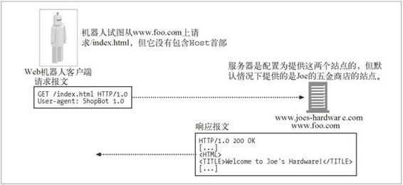

9.2 机器人的 HTTP
机器人和所有其他 HTTP 客户端程序并没有什么区别。它们也要遵守 HTTP 规范中的规则。发出 HTTP 请求并将自己广播成 HTTP/1.1 客户端的机器人也要使用正确的 HTTP 请求首部。
很多机器人都试图只实现请求它们所查找内容所需的最小 HTTP 集。这会引发一些问题；但短期内这种行为不会发生什么改变。结果就是，很多机器人发出的都是 HTTP/1.0 请求，因为这个协议的要求很少。
9.2.1 识别请求首部
尽管机器人倾向于只支持最小的 HTTP 集，但大部分机器人确实实现并发送了一些识别首部——最值得一提的就是 User-Agent 首部。建议机器人实现者们发送一些基本的首部信息，以通知各站点机器人的能力、机器人的标识符，以及它是从何处起源的。
在追踪错误爬虫的所有者，以及向服务器提供机器人所能处理的内容类型时，这些信息都是很有用的。鼓励机器人实现者们使用的基本识别首部包括如下内容。
User-Agent
将发起请求的机器人名字告知服务器。
From
提供机器人的用户 / 管理者的 E-mail 地址。1
1 一种 RFC 822 E-mail 地址格式。
Accept
告知服务器可以发送哪些媒体类型。2 这有助于确保机器人只接收它感兴趣的内容（文本、图片等）。
2 3.5.2 节列出了所有 Accept 相关的首部；机器人可能会发现，如果它们对特定版本感兴趣的话，发送 Accept-Charset 之类的首部是很有帮助的。
Referer
提供包含了当前请求 URL 的文档的 URL。3
3 有些站点管理者会尝试着记录机器人是如何找到指向其站点内容的链接的，对这些人来说，这个首部非常有用。
9.2.2 虚拟主机
机器人实现者要支持 Host 首部。随着虚拟主机（参见第 5 章）的流行，请求中不包含 Host 首部的话，可能会使机器人将错误的内容与一个特定的 URL 关联起来。因此，HTTP/1.1 要求使用 Host 首部。
在默认情况下，大多数服务器都被配置为提供一个特定的站点。因此，不包含 Host 首部的爬虫向提供两个站点的服务器发起请求时，就像图 9-5 中的站点一样（www.joes-hardware.com 和 www.foo.com），假设默认情况下服务器被配置为提供 www.joes-hardware.com 站点（且不需要 Host 首部），那么，若请求 www.foo.com 上的某个页面，爬虫实际获取的就是 Joe 的五金商店的站点上的内容。更糟糕的是，爬虫会认为来自 Joe 的五金站点上的那些内容是来自 www.foo.com 的。如果带有相对立的政治色彩或其他观点的两个站点是由同一台服务器提供的，你肯定能想象到会有更不幸的局面出现。

图 9-5 发送请求时没有携带 Host 首部，虚拟 docroot 会引发问题的例子
9.2.3 条件请求
鉴于这些机器人的努力程度，尽量减少机器人所要获取内容的数量通常是很有意义的。对因特网搜索引擎机器人来说，需要下载的潜在页面有数十亿，所以，只在内容发生变化时才重新获取内容是很有意义的。
有些机器人实现了条件 HTTP 请求，4 它们会对时间戳或实体标签进行比较，看看它们最近获取的版本是否已经升级了。这与 HTTP 缓存查看已获取资源的本地副本是否有效的方法非常相似。更多与缓存对资源本地副本的验证有关的信息请参见 第 7 章。
4 3.5.2 节给出了一个机器人可以实现的条件首部的完整列表。
9.2.4 对响应的处理
很多机器人的兴趣主要在于用简单的 GET 方法来获取所请求的内容，所以，一般不会在处理响应的方式上花费太多时间。但是，使用了某些 HTTP 特性（比如条件请求）的机器人，以及那些想要更好地探索服务器，并与服务器进行交互的机器人则要能够对各种不同类型的 HTTP 响应进行处理。
状态码
总之，机器人至少应该能够处理一些常见的，以及预期的状态码。所有机器人都应该理解 200 OK 和 404 Not Found 这样的状态码。它们还应该能够根据响应的一般类别对它并不十分理解的状态码进行处理。第 3 章的表 3-2 给出了不同状态码的分类及其含义。
有些服务器并不总能返回适当的错误代码，认识到这一点是很重要的。有些服务器甚至会将 HTTP 状态码 200 OK 与描述错误状态的报文主体文本一同返回！很难对此做些什么——只是实现者应该要了解这些情况。
实体
除了 HTTP 首部所嵌的信息之外，机器人也会在实体中查找信息。HTML 元标签，5 比如元标签 http-equiv，就是内容编写者用于嵌入资源附加信息的一种方式。
5 9.4.7 节列出了一些附加的元指令，站点管理员和内容编写者可以通过这些元指令来控制机器人的行为，以及这些机器人对已获取文档所执行的操作。
服务器可能会为它所处理的内容提供一些首部，标签 http-equiv 为内容编写者提供了一种覆盖这些首部的方式：
<meta http-equiv="Refresh" content="1;URL=index.html">
这个标签会指示接收者处理这个文档时，要当作其 HTTP 响应首部中有一个值为 1,URL=index.html 的 Refresh HTTP 首部。6
6 有时会将 Refresh HTTP 首部作为将用户（或者在这种情况下，就是将机器人）从一个页面重定向到另一个页面的手段。
有些服务器实际上会在发送 HTML 页面之前先对其内容进行解析，并将 http-equiv 指令作为首部包含进去；有些服务器则不会。机器人实现者可能会去扫描 HTML 文档的 HEAD 组件，以查找 http-equiv 信息。7
7 根据 HTML 的规范，元标签一定要出现在 HTML 文档的 HEAD 部分。但并不是所有的 HTML 文档都会遵循规范，因此，它们有时也会出现在 HTML 文档的其他区域中。
9.2.5 User-Agent导向
Web 管理者应该记住，会有很多的机器人来访问它们的站点，因此要做好接收机器人请求的准备。很多站点会为不同的用户代理进行内容优化，并尝试着对浏览器类型进行检测，以确保能够支持各种站点特性。这样的话，当实际的 HTTP 客户端根本不是浏览器，而是机器人的时候，站点为机器人提供的就会是出错页面而不是页面内容了。在某些搜索引擎上执行文本搜索，搜索短语“your browser does not support frames”（你的浏览器不支持框架），会生成一个包含那条短语的出错页面列表。
站点管理者应该设计一个处理机器人请求的策略。比如，它们可以为所有其他特性不太丰富的浏览器和机器人开发一些页面，而不是将其内容限定在特定浏览器所支持的范围。至少，管理者应该知道机器人是会访问其站点的，不应该在机器人访问时感到猝不及防。8
8 如果某站点上有一些不应该让机器人访问的内容，站点管理员该如何控制机器人在其站点上的行为呢？ 9.4 节给出了相关的信息。